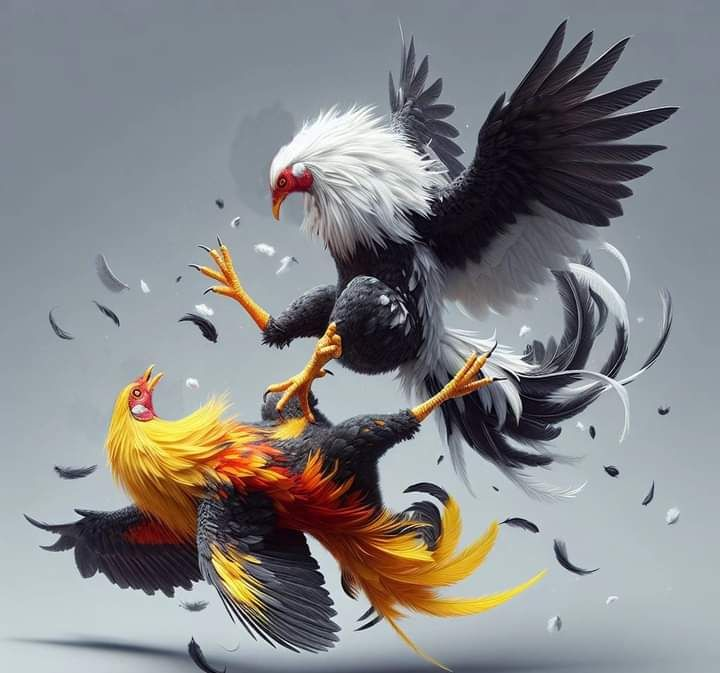

EL ESPECTACULO
La vida cada en todas las galleras.


Tradición, historia y pasión por la cultura gallística.
🐓 Tradición peruana: una costumbre transmitida de generación en generación.
📜 Historia centenaria: con raíces que se remontan a varios siglos atrás.
🌎 Presencia internacional: practicada y reconocida en diversos países.
#1🐔¿Que significa realmente los gallos de pelea para la cultura peruana?

#2🤝En este tipos de gallo de combate, la variedad de especies se hace notar, desde España hasta casi todo el continente americano

#3🌱Los origenes estan cargados de historiaL: Lucha, emocion, y muchas disputas para que el combate de gallos fuera legal y se vuelva parte de la cultura de hoy en dia de muchos paises

#4💲¿Que valor aporta para la cultura? Es una muy buena pregunta y aqui te enseñaremos porque tiene gran importancia para la cultura del pais entero y descubre todo el valor sentimental y cultural de las peleas de gallos

La vida cada en todas las galleras.
El mas fuerte muchas veces sobrevive

Aunque algunos no pelean,corre por su sangre

El debil no puede prevalecer.